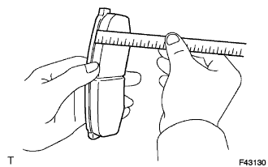
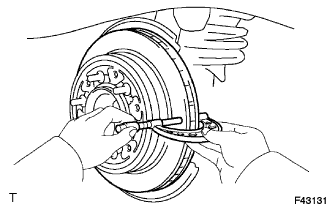
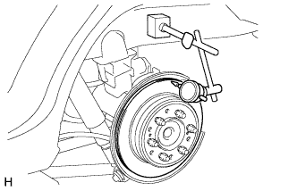

ЗАДНИЙ ТОРМОЗ > ПРОВЕРКА |
| 1. ПРОВЕРЬТЕ ТОЛЩИНУ ФРИКЦИОННОЙ НАКЛАДКИ ТОРМОЗНОЙ КОЛОДКИ |
|  |
С помощью линейки измерьте толщину фрикционной накладки тормозной колодки.
| 2. ПРОВЕРЬТЕ ТОЛЩИНУ ДИСКА |
|  |
С помощью микрометра измерьте толщину диска.
| 3. ПРОВЕРЬТЕ БИЕНИЕ ДИСКА |
|  |
Установите диск и закрепите 6 гайками ступицы.
С помощью индикатора измерьте радиальное биение диска на расстоянии 10 мм (0,394 дюйма) от наружного края.
| 4. ОТРЕГУЛИРУЙТЕ БИЕНИЕ ДИСКА |
Выверните 2 болта и снимите тормозную скобу заднего дискового тормоза с опорного диска.
Отверните гайки ступицы и снимите диск. Поверните диск на 1/5 оборота относительно его исходного положения на ступице, а затем закрепите диск с помощью гаек ступицы.
Измерьте биение диска. Запишите значение биения и положение диска на ступице.
Повторяйте 2 предыдущие операции, пока диск не будет установлен в трех оставшихся положениях на ступице. Если определенное выше минимальное биение составляет менее 0,20 мм (0,00787 дюйма), закрепите диск в этом положении. Если определенное выше минимальное биение превышает 0,20 мм (0,00787 дюйма), замените диск и повторите процедуру "Проверьте биение диска".